Manual Book — Training Event
Manual ini menjelaskan cara membuat Training Event, mengelola peserta, memprosesnya sampai disetujui, lalu mencatat realisasi pelaksanaan (kehadiran, nilai, lampiran) di Training Management System ABL/NKM.
1. Alur kerja
Sebuah event melewati dua tahap: persetujuan rencana event, lalu realisasi pelaksanaan. Menu ada di Training Event pada bar atas, dengan dua pilihan: Training Event dan Event Realization.
- Buat event (Training Event → Training Event → Add Event) dan simpan dengan Save Event. Event baru berstatus Draft.
- Post event dari halaman Detail. Riwayat mencatatnya sebagai Request for Approve dan status menjadi Pending for DeptHead.
- Approve oleh Dept Head, lalu Approve oleh HRD. Setelah itu status menjadi Approved dan tombol Cetak Absensi (PDF daftar hadir) tersedia.
- Setelah training berlangsung, buka Training Event → Event Realization, isi kehadiran, nilai, dan lampiran, lalu klik Post to HRD.
- HRD memeriksa realisasi dan memilih Mark as Complete, atau Reject dengan alasan agar pembuat memperbaikinya.
Bila approver menolak (Reject), event berstatus Rejected; alasannya terlihat di Workflow History.
Status event pada filter daftar: Draft, Pending, Approved, Canceled, Rejected, Submitted, Complete.
2. Daftar Training Event
Buka Training Event → Training Event. Halaman Training Event Management menampilkan seluruh event yang boleh Anda lihat.
- Pilih Company, Department, dan Status pada panel Filters; Clear mengembalikan filter.
- Cari dengan kotak Search; atur jumlah baris dengan Show entries.
- Klik Add Event (biru, kanan atas) untuk membuat event baru.
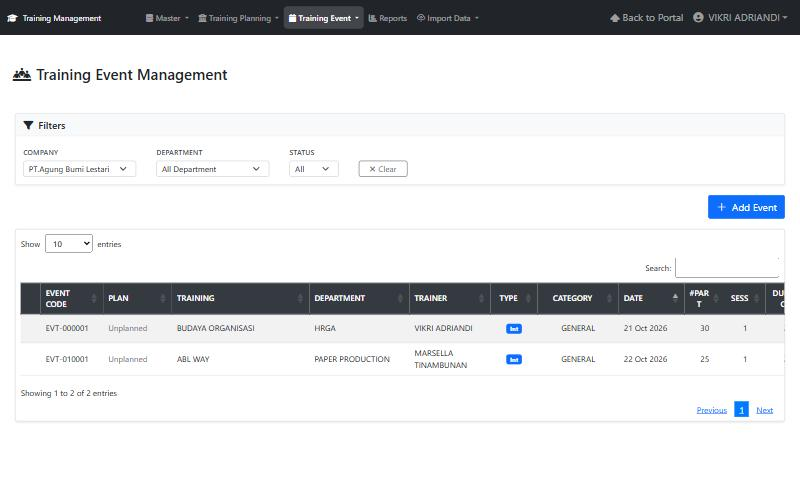
Kolom daftar: Event Code, Plan (Unplanned bila event tidak berasal dari plan), Training, Department, Trainer, Type (Int/Ext), Category, Date, #Part (jumlah peserta), Sess, Duration, Status, dan Action. Geser tabel ke kanan bila kolom Status dan Action belum terlihat.
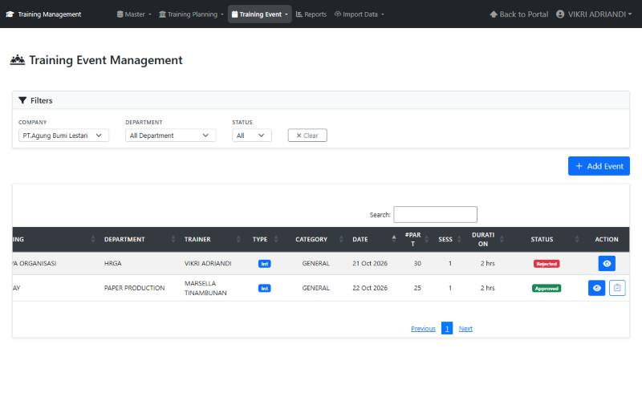
Tombol Action: ikon mata membuka Detail; ikon clipboard (Entry Realization) muncul pada event yang sudah Approved.
3. Membuat event baru
Klik Add Event pada daftar event. Isi bagian Event Information, Training Information, lalu tambahkan peserta.
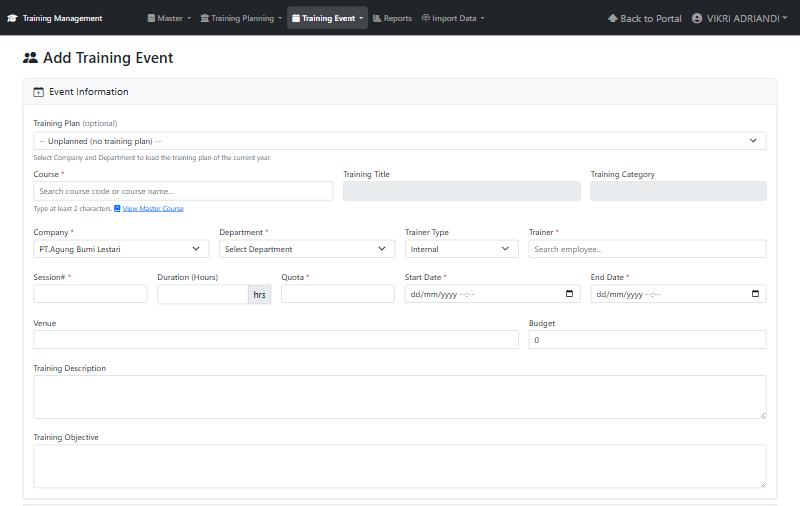
| Field | Cara pengisian |
|---|---|
| Training Plan (optional) | Pilih plan bila event berasal dari rencana tahunan. Pilih Company dan Department lebih dulu agar daftar plan tahun berjalan termuat. Biarkan Unplanned bila tidak ada plan. |
| Course * | Ketik minimal 2 karakter nama atau kode course, lalu pilih. Training Title dan Training Category terisi otomatis (tidak bisa diubah). Tautan View Master Course membuka daftar course. |
| Company * / Department * | Pilih perusahaan dan departemen penyelenggara |
| Trainer Type | Internal: cari karyawan pada kolom Trainer. External: isi nama trainer luar |
| Session# *, Duration (Hours) | Jumlah sesi dan durasi dalam jam |
| Quota * | Batas jumlah peserta; harus lebih dari 0 |
| Start Date * / End Date * | Tanggal dan jam mulai dan selesai |
| Venue, Budget | Lokasi dan anggaran (opsional) |
| Training Description / Objective | Uraian dan tujuan training |
Peserta (Planned Participants)
Gulir ke bagian Planned Participants. Klik Add Participant, cari karyawan, lalu pilih; ulangi untuk setiap peserta. Gunakan ikon hapus pada kolom Action untuk membuang peserta. Setelah semua terisi, klik Save Event (hijau); Cancel membatalkan input.
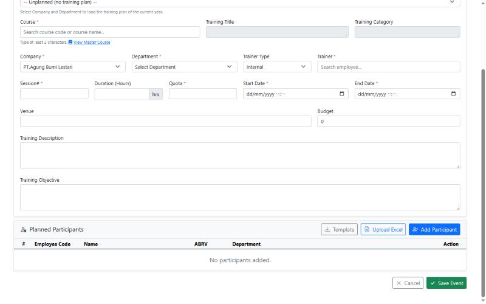
Aturan quota yang diperiksa form:
- Quota harus diisi dan lebih dari 0 sebelum peserta ditambahkan (Please enter participant quota first.).
- Peserta tidak bisa ditambah bila quota sudah tercapai (Participant quota has been reached.). Naikkan quota lebih dulu.
- Quota tidak bisa diturunkan di bawah jumlah peserta yang sudah ada.
- Event tidak dapat disimpan bila jumlah peserta melebihi quota.
4. Upload peserta dari Excel
Untuk peserta dalam jumlah banyak, gunakan Upload Excel pada kartu Planned Participants (halaman Add Event). Fitur yang sama tersedia di halaman Realization untuk peserta walk-in (bagian 7).
- Klik Template untuk mengunduh Template_Participants.xlsx.
- Isi sheet Participants: kolom A EmployeeCode, satu karyawan per baris mulai baris 2. Jangan mengubah atau memindahkan header di baris 1. Nama, ABRV, dan Department terisi otomatis dari data karyawan.
- Pastikan Quota sudah diisi, lalu klik Upload Excel dan pilih file .xlsx.
- Ringkasan hasil tampil: jumlah peserta yang ditambahkan dan daftar baris yang dilewati beserta alasannya.
- Periksa daftar peserta, lalu klik Save Event.
Aturan upload
| Aturan | Keterangan |
|---|---|
| Format dan ukuran | Hanya .xlsx, maksimal 500 baris dan 5 MB |
| Karyawan | Hanya karyawan aktif; kode tidak ditemukan atau karyawan resign dilewati |
| Duplikat | Duplikat di dalam file, atau yang sudah ada di daftar peserta, dilewati |
| Mode | Menambah ke daftar yang ada, tidak menimpa |
| Quota (Add Event) | Peserta ditambahkan sampai quota penuh; sisanya dilaporkan Not added: participant quota reached. |
Upload hanya mengisi daftar di layar. Data baru tersimpan setelah Anda menekan Save Event (atau Save Draft di Realization).
5. Detail event, Post, dan approval
Klik ikon mata pada daftar event untuk membuka halaman Training Event (Detail). Judul memuat kode event, dan lencana status (mis. Approved) tampil di kanan.
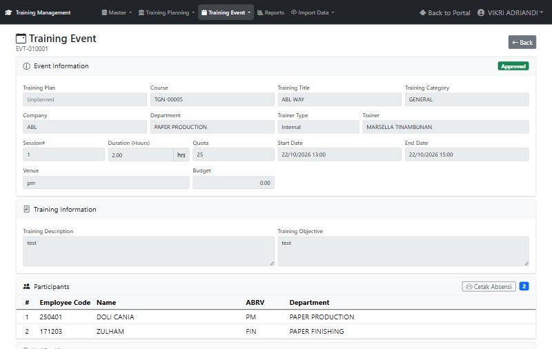
Halaman ini berisi:
- Event Information dan Training Information (hanya baca).
- Participants: daftar peserta, dengan tombol Cetak Absensi untuk mengunduh PDF daftar hadir. Tombol ini tersedia setelah event Approved.
- Workflow History: siapa melakukan apa dan kapan, dari status mana ke status mana, beserta Remarks.
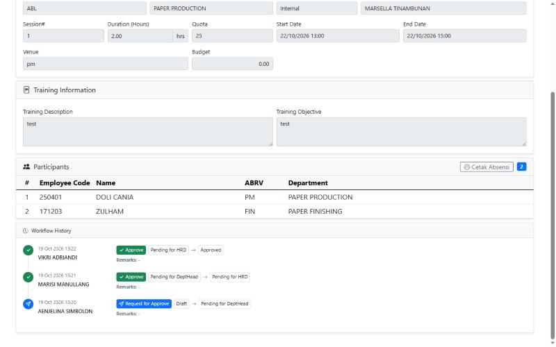
Tombol aksi di kanan atas
Tombol yang tampil bergantung pada hak akses Anda dan status event.
| Tombol | Siapa dan kapan | Langkah |
|---|---|---|
| Edit / Delete | Pembuat, saat event masih boleh diubah | Edit: lihat bagian 6. Delete: konfirmasi Delete Training Event? lalu Yes, Delete; event dan pesertanya dihapus |
| Post | Pembuat, untuk mengajukan event | Konfirmasi Yes, Post. Status menjadi Pending for DeptHead |
| Approve | Dept Head, lalu HRD | Konfirmasi Yes, Approve |
| Reject | Dept Head atau HRD | Isi alasan penolakan pada dialog (wajib), lalu konfirmasi |
Setelah aksi berhasil, halaman menampilkan status baru dan menambah satu baris pada Workflow History.
6. Mengubah event
Tombol Edit pada halaman Detail hanya muncul bila akun Anda boleh mengubah event pada statusnya saat itu (mis. event yang ditolak perlu diperbaiki). Tanpa hak tersebut, halaman Edit ditolak oleh server.
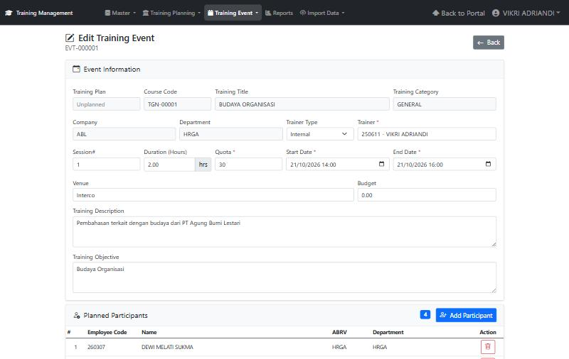
- Field yang abu-abu (Training Plan, Course Code, Training Title, Category, Company, Department) tidak dapat diubah.
- Ubah field yang boleh diedit: Trainer, Quota *, Start Date *, End Date *, Venue, Budget, Description, dan Objective.
- Kelola peserta di kartu Planned Participants: Add Participant untuk menambah, ikon tempat sampah merah untuk menghapus.
- Klik Save Changes; Cancel membatalkan.
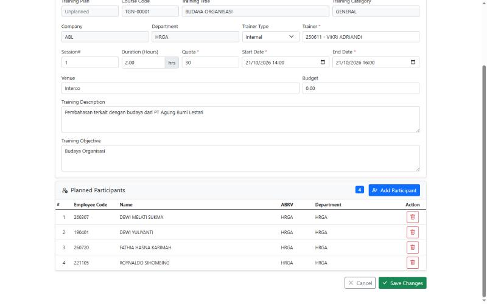
Aturan quota sama dengan saat membuat event: quota tidak boleh lebih kecil dari jumlah peserta. Upload Excel hanya tersedia di halaman Add Event dan Realization.
7. Realization (pelaksanaan training)
Realization mencatat apa yang benar-benar terjadi: waktu pelaksanaan, siapa yang hadir, nilai, dan bukti lampiran.
7.1 Memilih event
Buka Training Event → Event Realization. Daftar menampilkan event yang menunggu entri realisasi atau review HRD. Cari dengan kode atau judul, filter Company, Department, dan Status, lalu klik Open pada event yang dituju.
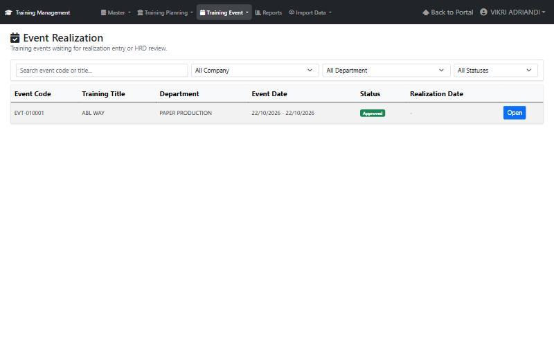
7.2 Mengisi realisasi
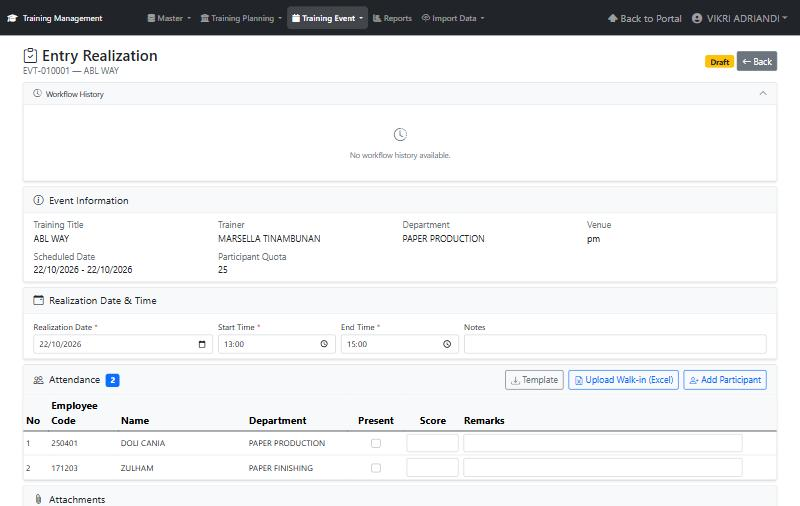
- Event Information (hanya baca): judul, trainer, departemen, venue, tanggal rencana, dan Participant Quota.
- Realization Date & Time: isi Realization Date, Start Time, End Time (wajib), dan Notes bila perlu.
- Attendance: centang Present untuk peserta yang hadir, isi Score (0–100) dan Remarks bila ada. Kolom Employee Code dan Name membantu memastikan orang yang benar.
7.3 Peserta walk-in (tidak ada di rencana)
- Add Participant: cari karyawan, lalu pilih. Baris baru bertanda Walk-in dan bisa dihapus dengan tombol Remove.
- Upload Walk-in (Excel): untuk banyak peserta sekaligus. Klik Template untuk contoh file; kolom A EmployeeCode, mulai baris 2. Karyawan hasil upload masuk sebagai walk-in dengan status Present. Peserta yang sudah ada di daftar (terencana maupun walk-in), duplikat di file, kode yang tidak ditemukan, dan karyawan resign dilewati dan dilaporkan pada ringkasan hasil upload. Batas file sama seperti bagian 4 (.xlsx, 500 baris, 5 MB); Realization tidak membatasi jumlah walk-in dengan quota.
7.4 Lampiran
Di kartu Attachments, pilih Document Type (mis. Scanned Attendance Sheet), klik Choose Files, lalu Upload. Format yang diterima: PDF, JPG, PNG, DOC(X), XLS(X), maksimal 20 MB per file. Lampiran yang sudah diunggah tampil pada tabel (nama file, tipe, ukuran, pengunggah).
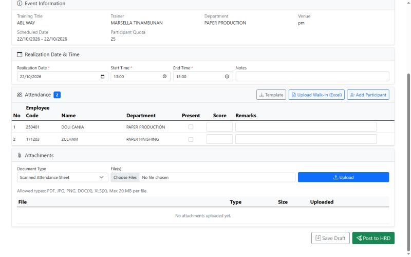
7.5 Simpan dan kirim ke HRD
| Tombol | Fungsi |
|---|---|
| Save Draft | Menyimpan isian tanpa mengirim; bisa dilanjutkan nanti. Status tetap Draft |
| Post to HRD | Mengirim realisasi ke HRD untuk direview. Setelah dikirim, isian tidak dapat diubah |
| Mark as Complete | Tombol HRD/TC: menyatakan realisasi benar dan menyelesaikan event |
| Reject | Tombol HRD/TC: mengembalikan ke pembuat dengan alasan (wajib) |
Bila realisasi ditolak, halaman menampilkan Rejected by HRD – Please Revise. Baca alasan penolakan pada Workflow History, perbaiki isian, lalu Post to HRD lagi. Seluruh riwayat (Post, Complete, Reject) tampil di Workflow History di bagian atas halaman.
8. Pemecahan masalah
| Gejala | Penyebab | Tindakan |
|---|---|---|
| Tombol Edit, Post, Approve, atau Mark as Complete tidak muncul | Akun tidak berwenang pada status event saat itu | Cek status di Detail dan Workflow History; hubungi pihak yang sedang memegang giliran (Dept Head / HRD) |
| Pesan Please enter participant quota first. | Quota belum diisi saat menambah peserta | Isi Quota (lebih dari 0) lebih dulu |
| Pesan Participant quota has been reached. | Jumlah peserta sudah sama dengan quota | Naikkan Quota, atau hapus peserta yang tidak perlu |
| Pesan Number of participants cannot exceed the participant quota. | Peserta lebih banyak dari quota saat Save | Naikkan Quota atau kurangi peserta |
| Pesan Participant quota cannot be less than N | Quota diturunkan di bawah jumlah peserta | Hapus peserta terlebih dulu |
| Upload Excel menolak file | Bukan .xlsx, header EmployeeCode hilang, atau lebih dari 500 baris | Gunakan Template dan jangan ubah header di baris 1 |
| Kode karyawan dilewati saat upload | Kode tidak ditemukan, karyawan resign, atau duplikat | Perbaiki kode sesuai ringkasan hasil upload, lalu upload ulang baris yang dilewati |
| Daftar event kosong dan kolom Company belum terisi | Halaman masih memuat data | Tunggu beberapa detik, atau muat ulang halaman |
| Event yang sudah Approved tidak ada di daftar Realization | Filter Company/Department/Status tidak cocok | Klik filter ke All atau cari dengan kode event |